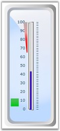
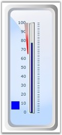

Essential Gauge WPF now provides support to bind between the State Range and State Indicator. This can be achieved by setting the BindIndicator property of the Linear Gauge to true. Default value of this property is set to false.
This feature is useful while working with multiple ranges. For example, while analyzing the performance of a gauge, set the range for each rating and enable the BindIndicator property. Once this is done, you can see the change in the indicator color depending upon the performance.
The IndicatorColor property is used to specify the color of the active indicator.
 Note: Orange gradient is the default color of the
active indicator.
Note: Orange gradient is the default color of the
active indicator.
The following code example illustrates this feature.
|
[XAML]
<my:LinearScale.Ranges> <my:LinearRange BorderWidth="0.5" EndValue="100" EndWidth="10" BindIndicator="True" IndicatorColor="Blue" RangePosition="Inside" StartValue="65" StartWidth="2" /> </my:LinearScale.Ranges> |
|
[C#]
LinearRange range = new LinearRange(); range.BindIndicator = true; range.StartValue = 70; range.EndValue = 100; range.IndicatorColor = new SolidColorBrush(Colors.Blue); linearGauge1.Scales[0].Ranges.Add(range); |
In the following screen shot, the pointer value lies outside the range value (70-100) and hence the Indicator is inactive (OFF state).

Figure 89: Inactive Indicator (BindIndicator property set to True)
In the following screen shot, the pointer value lies inside the range value (70-100) and hence the Indicator is active (ON state).

Figure 90: Active Indicator (BindIndicator property set to True)
Properties and Events
The following table lists the properties and events associated with this feature.
Properties
|
Property |
Type |
Description |
Value Accepted |
Property Syntax |
|
IncrementKey |
Dependency |
Custom key can be provided to increase the pointer value. |
Key |
IncrementKey=Keys.Up |
|
DecrementKey |
Dependency |
Custom key can be provided to decrease the pointer value. |
Key |
DecrementKey=Keys.Down |
Events
|
Event |
Event Trigger |
Method Handling Event |
Event Argument |
Purpose |
|
BindIndicatorChanged |
BindIndicatorChanged |
OnBindIndicatorChanged |
DependencyPropertyChangedEventArgs |
To set the binding between the two indicators. |
|
IndicatorColorChanged |
ValueChanged for the Indicator |
OnValueChanged |
KeyEventArgs |
Indicator color changes, if the pointer value falls between the range value. |